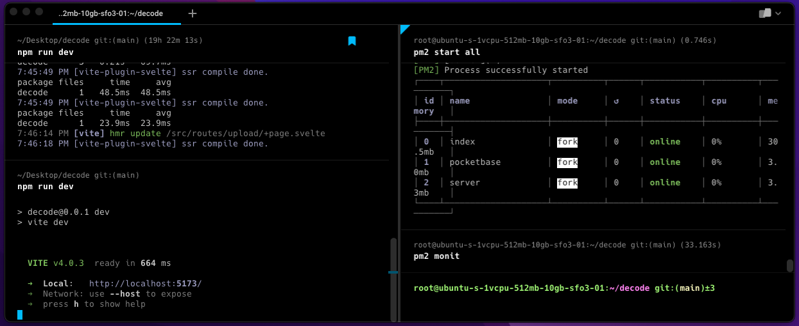

Warp Terminal
Warp terminal claims to be a "a blazingly fast, rust-based terminal reimagined from the ground up to work like a modern app". Here we will go over some of my favorite features and discuss why I made the switch.

Installing
If you are on Mac you can head over to Warp.dev and download it from there or you can use brew to install Warp with the following command:
1brew install --cask warp
Features
The idea of Warp is to bring the default terminal into the future by adding ease-of-use features like the following:
- Mouse cursor use
- That's right with Warp you can click on the command you are editing and fix it without arrow keying back a million times.
- You can also edit multiple lines at the same time like with VS Code or any other text editor.
- Tabs and Panes
- Warp has tabs like the default terminal allowing you to have multiple projects open a the same time.
- Warp also has panes that allow you to split the terminal window into sub windows. This is useful if you want to open up your database and your development server simultaneously without switching between tabs.
- A.I. command search
- Warp uses GPT-3 to auto-suggest commands if you forget what command you need to run
- Autocomplete
- If you hate hitting the up arrow a million times to find that command you ran a while back, Warp has you covered. Warp will auto-complete the command you want, all you have to do is hit the right arrow key.
Warp terminal is a super exciting development with terminals and is definitely worth checking out even if you don't stick with it. It has an enterprise plan for teams that includes collaboration with other team members and a few other features. I will be watching this as it becomes more developed but I am excited to use it for now.